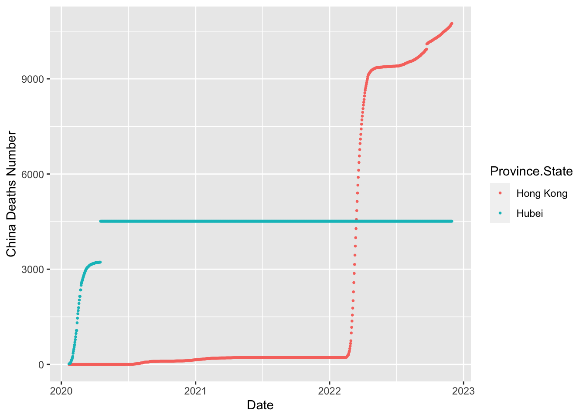

This is my PM566 Final Project website.
I was in the US at the beginning of 2020, and then back to China in March 2020 and quarentined. So I was observing how did the pandemic spreaded so quickly and sharply increased around the world and specificly in the US. On the other side, after the few first months in 2020, the pandemic was considered as well controlled. And I feel it will be meaningful to compare with those two countries.
I got this dataset from “https://data.humdata.org/dataset/novel-coronavirus-2019-ncov-cases?”. These two datasets are about the accumulated-confirmed and death cases of different countries around the world throughout the whole pandemic (1/22/20-11/30/22), reported in daily basis. The data is updating everyday by John Hopkins Questions: the main goal is to compare and visualize China and the US data. First, we need to download them and converted the empty columns to NA
We have variables called “province” ““Country/Region”, “Lat”, “Long” and different dates
chinaconfirmed <-
confirmed %>%
filter(Country.Region == "China")
usconfirmed <-
confirmed %>%
filter(Country.Region == "US")
chinadeaths <-
deaths %>%
filter(Country.Region == "China")
usdeaths <-
deaths %>%
filter(Country.Region == "US")#those dataframes are represented as a single row with the date values as columns. This format is not ideal and cannot be graphed or used in model creation. Now lets
chinaconfirmed %>%
pivot_longer(cols= -one_of('Country.Region','Province.State','Lat','Long')
,names_to = 'Date'
,values_to = 'Confirmed') ->
chinaconfirmed
# remove the X infront of date and convert date to normal date datatype
chinaconfirmed$Date <- sapply(chinaconfirmed$Date,function(x) {x <- gsub("X","",x)})
chinaconfirmed$Date <- as.Date(chinaconfirmed$Date, "%m.%d.%y")
usconfirmed %>%
pivot_longer(cols= -one_of('Country.Region','Province.State','Lat','Long')
,names_to = 'Date'
,values_to = 'Confirmed') ->
usconfirmed
usconfirmed$Date <- sapply(usconfirmed$Date,function(x) {x <- gsub("X","",x)})
usconfirmed$Date <- as.Date(usconfirmed$Date, "%m.%d.%y")
chinadeaths %>%
pivot_longer(cols= -one_of('Country.Region','Province.State','Lat','Long')
,names_to = 'Date'
,values_to = 'Confirmed') ->
chinadeaths
chinadeaths$Date <- sapply(chinadeaths$Date,function(x) {x <- gsub("X","",x)})
chinadeaths$Date <- as.Date(chinadeaths$Date, "%m.%d.%y")
usdeaths %>%
pivot_longer(cols= -one_of('Country.Region','Province.State','Lat','Long')
,names_to = 'Date'
,values_to = 'Confirmed') ->
usdeaths
usdeaths$Date <- sapply(usconfirmed$Date,function(x) {x <- gsub("X","",x)})
usdeaths$Date <- as.Date(usconfirmed$Date, "%m.%d.%y") #We only have the whole US data (because the US only count its total number?), so I just present the US as a country total.China has 50+ countries in total, so I choose the top 7 provinces that have the largest number of deaths of deaths cases. For the death cases, I only choose the provinces have more than 1000 death cases.  Hongkong is the city with the most COVID-19 confirmed cases according to the graphs, also the only one with more than 5000 death cases.
We can see China started confirming cases ealier than the US but the confirmed and deaths cases increased slightly until the beginning of 2022. However, the overall confirmed and deaths cases in the US (Until 11/29/2022, deaths cases is 1.09M, from Wikipedia) are significantly higher than China (until 11/29/2022 deaths cases is 5233, from Wikipedia). Part of the reason is probably because of the strict COVID-19 policies.
Copyright © 2020, Jiawen Chen.